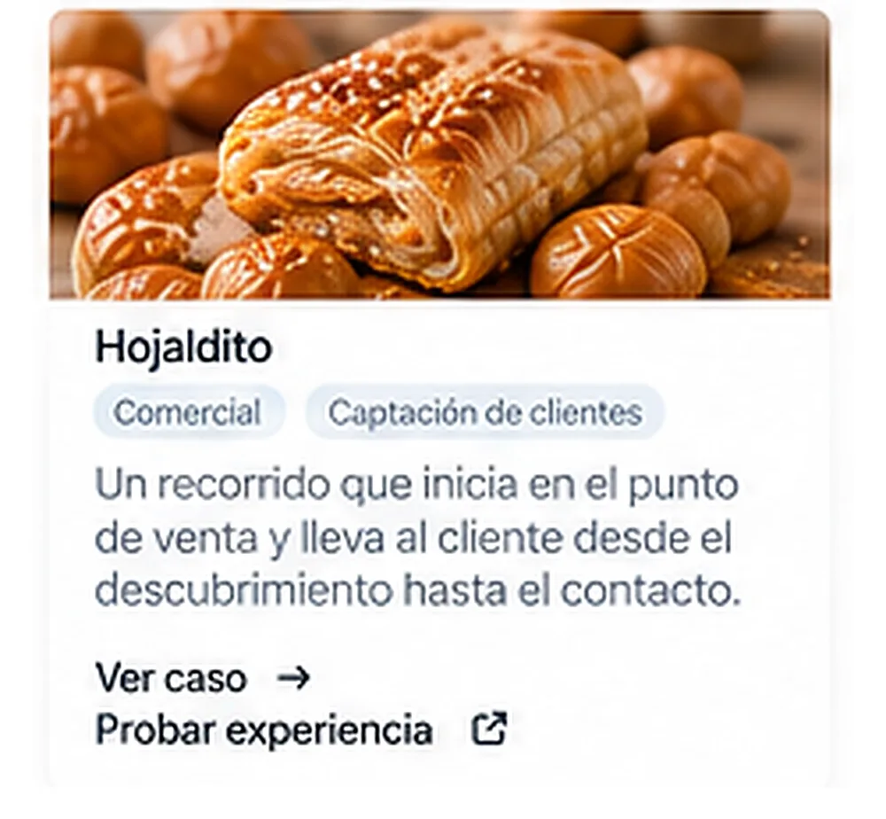

Diseñamos un recorrido digital para convertir interesados en nuevos puntos de distribución.
Hojaldito necesitaba aumentar sus ventas expandiendo su red de puntos físicos. El reto era llevar a cada interesado por el camino comercial que realmente correspondía.

Hojaldito necesitaba aumentar sus ventas expandiendo su red de puntos físicos.
Un producto premium que dependía del voz a voz para llegar a nuevos puntos de venta. Los interesados llegaban solos, pero el negocio no tenía un camino diseñado para llevarlos de la curiosidad a una oportunidad real.
No todos los interesados tenían el mismo rol.
Algunos podían vender directamente en su negocio y otros podían conseguir nuevos negocios para Hojaldito. Enviar a todos al mismo formulario significaba perder esa diferencia.
Vender en mi negocio
Para quien tiene un establecimiento y quiere incorporar Hojaldito a su oferta.
Ser Socio Ganador
Para quien puede abrir nuevas oportunidades y conseguir otros puntos de distribución.
En lugar de enviar a todos al mismo formulario, dividimos el camino.
Creamos un recorrido que identifica la oportunidad y dirige al usuario hacia dos caminos comerciales: vender en su propio negocio o convertirse en Socio Ganador.
Vive el recorrido tal como lo vive un interesado real.
Elige un camino y avanza pantalla por pantalla, igual que lo haría alguien real llegando a la página.
De una visita a una oportunidad comercial.
Una experiencia digital que no solo presenta el producto, sino que organiza, filtra y dirige oportunidades hacia el modelo de negocio correspondiente. El negocio pasó del voz a voz a un recorrido permanente, entregado en menos de una semana sobre una base tecnológica escalable.
entrega
de operación
escalable
“No diseñamos una página para Hojaldito. Diseñamos el camino que convierte una visita en una oportunidad comercial.”